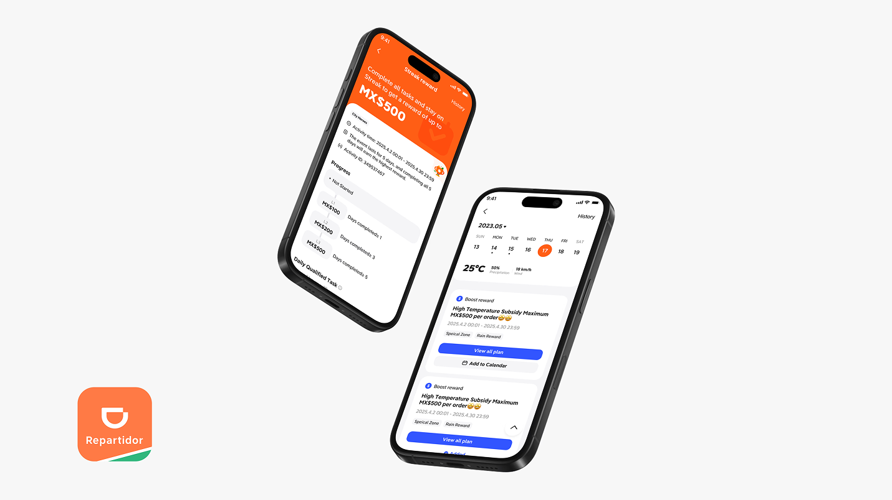
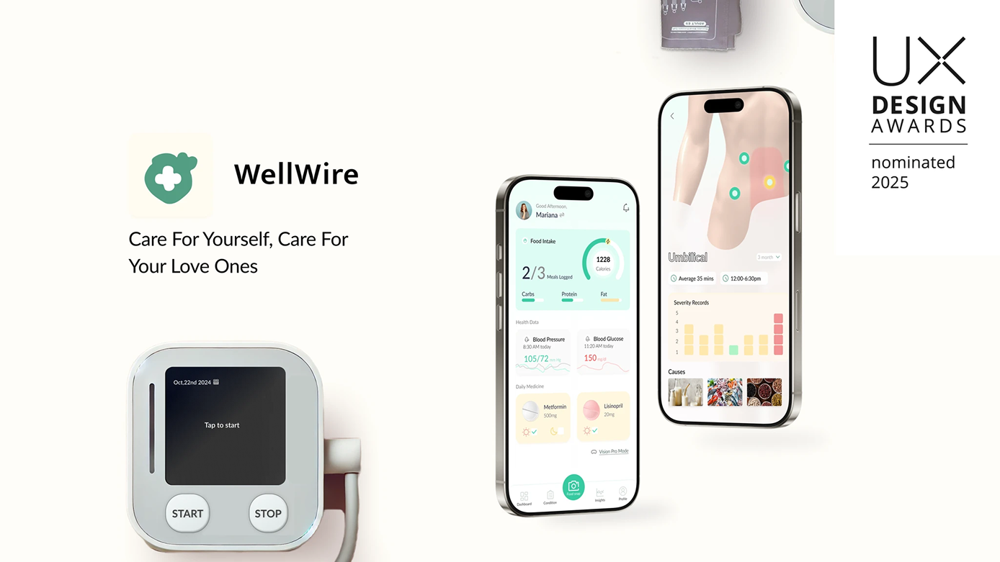

Crystal (Ruoyan Wang)

Crystal (Ruoyan Wang) is a Term 6 Interaction Design student from Beijing, China. She focuses on user research, service design, and experience design, and takes a cross-disciplinary approach that draws from psychology and business.
Interviewer: Kayley Park
Interviewee: Crystal (Ruoyan Wang)
"I'm drawn to design because it's not just about how things look, but how they work and impact people."
Q1 — Why did you choose ACCD and IxD specifically?
A: I chose ACCD and Interaction Design because I was initially interested in industrial or product design, but interaction design felt like a better match—more focused on logical thinking and problem-solving.
Q2 — How has your experience at ACCD been so far?
A: Academically it's been what I expected: exposure to coding, physical computing, and graphic design. Campus life feels less like a typical university experience and more like going to work.
Q3 — What's been your most impactful class at ACCD?
A: PDS classes (transdisciplinary studios) have been most impactful. They simulate real-world work and push you to consider practical factors beyond academic expectations.
Q4 — What's been the biggest challenge in the program?
A: My standards have changed; looking back I see growth but also feel there's never a point of full satisfaction. Being around very talented people can make it hard to know how to improve.
Q5 — What advice would you give incoming students?
A: Try many things, learn new tools, take classes outside your major, and don't be afraid to make mistakes—this is the time to experiment.
Q6 — Is there anything you're working on right now?
A: I'm working on a sponsored General Motors project designing a vehicle for Gen Z in 2035—it's challenging but a valuable learning experience.
Q7 — How do you grow and improve?
A: Reviewing portfolios, seeking feedback from professors, and evaluating suggestions critically helps improvement; there's no single 'perfect' portfolio.
Q8 — Closing thought
A: "Take risks, embrace mistakes, and stay open to experimenting."

